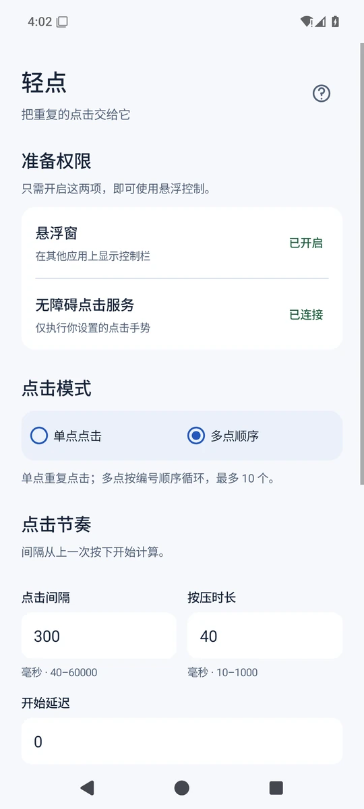

重复的点击，
轻点就好。
设好位置与节奏，把重复交给轻点。
一个轻巧、可控的 Android 连点器。
Android 8.0+v1.0.4约 41 KB
动手试试，就会了。
网页模拟演示，不会操作你的设备拖动编号调整位置，再点播放
0 次点击
演示将完成 5 轮，可随时停止。真实应用最多支持 10 个点击位置
节奏交给它，
时间留给你。
需要反复点的地方，设定一次就好。
从第一次按下，到最后一轮结束，都由你决定。
- 一个位置，或一组顺序
- 单点反复点击，多点按编号循环。拖动圆点，想点哪里就放哪里。
- 快慢长短，自己设定
- 点击间隔、按压时长、开始延迟分别可调，找到适合你的节奏。
- 开始有数，结束有度
- 按轮数、按时长，或由你手动停止。右侧返回箭头，一键回到设置。
应用实际界面

跟随系统浅深色 · 参数与位置保存在本机
三步，开始轻点。
没有复杂流程，
准备好权限就可以出发。
开启两项权限
允许显示悬浮窗，并开启无障碍点击服务。首页会显示连接状态。
悬浮窗 + 无障碍设好点击节奏
选单点或多点，设置间隔和结束条件。先在内置测试区确认一下。
默认 300 毫秒 · 100 轮拖动编号，点击开始
打开悬浮控制，切换到目标应用。把编号拖到位置，按播放开始。
随时停止，随时返回
第一次使用，建议先点应用里的「先在测试区试一下」。
你可能还想知道
把常见的问题，
先说明白。
需要 root 吗？
不需要。轻点支持 Android 8.0 及以上，使用 Android 提供的无障碍手势接口。你只需按引导开启悬浮窗与无障碍服务。
怎样停止，或回到软件？
悬浮栏的方形按钮用于停止；右侧返回箭头会停止点击、收起悬浮栏并返回轻点。锁屏、旋转屏幕或服务中断也会停止，之后不会自动恢复执行。已经开始的按压最多在 1 秒内结束。
为什么无障碍显示「受限设置」？
Android 13 及以上可能对侧载应用设置限制。确认安装来源和权限用途后，可在系统「应用信息 → 右上角菜单 → 允许受限设置」中按系统流程处理。不同手机的入口可能不同。
下载安装时出现风险提示怎么办？
请从项目的 GitHub 发布页下载，并核对文件校验值。提示由系统、浏览器或安全软件决定，应用不能自行取消。若被明确判定为恶意程序，先停止安装并向对应厂商核查。
查看发布与校验信息可以在游戏中使用吗？
请先确认游戏是否允许自动操作。自动点击可能违反游戏规则并导致账号处罚，轻点不保证游戏兼容性、不被检测或不封号，也不提供反作弊绕过功能。